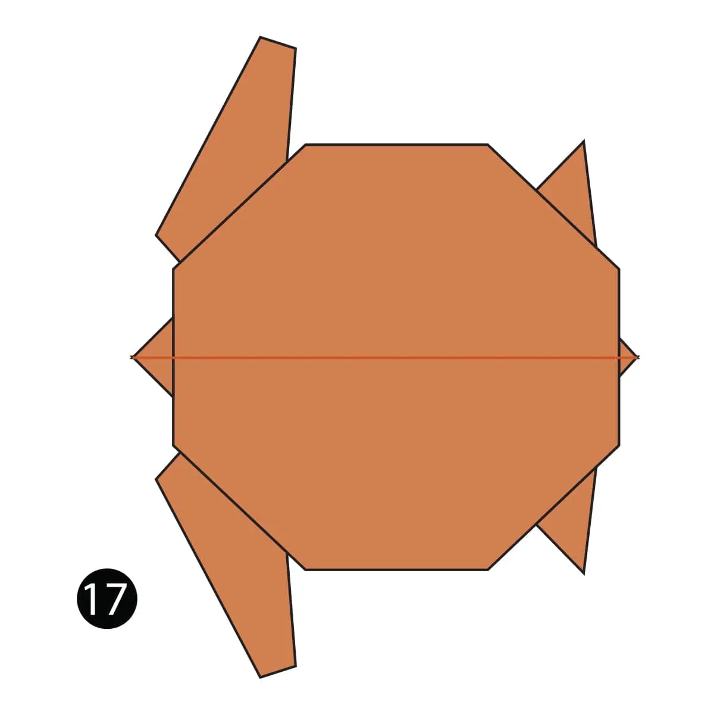

origami instructions and diagrams
Step by Step diagrams are probably the most popular and easiest to follow way to
show how to fold things out of paper.
Trying to find good origami instructions on the internet can be a lot of work though. To
help your search we've puttogether the largest database of free origami diagrams
anywhere on the Internet

Pigeon
- Pigeons have been known to live over 30 years
- A full grown pigeon has 10,000 feathers.
- Pigeons can navigate via the earth’s magnetic fields

chameleon
- Their feet work like salad tongs.
- chameleons vary wildly in terms of size.
- Skin crystals enable them to change color at will.

panda
- A panda Can Poop 28 Kilos per day.
- You can see panda babies in August.
- Pandas have 6 toes to grasp bamboo.

camel
- Camels can drink up to 40 gallons in one go
- There are over 160 words for camel in Arabic alone.
- Camels can run 40 miles per hour

gorila
- Around 1,063 exist in the wild.
- We share 98% of our DNA with gorillas.
- They can eat all day long.

teddy bear
- In 1902 in Germany, Steiff launched “Bear 55 PB”.
- The term bear-hug was first recorded in 1846.
- Actually the hunting trip was on November 14.

turtle
- Turtles live all over the world.
- A turtle’s shell is not an exoskeleton.
- their shell for extra protection.

swan
- They have their own constellation.
- swans can live to be over 20 years old.
- They are very territorial during mating season.

flying-cicada
- Females may be attracted to the sound of motors.
- Their short adult life is not unusual for bugs.
- Most have red-orange eyes.